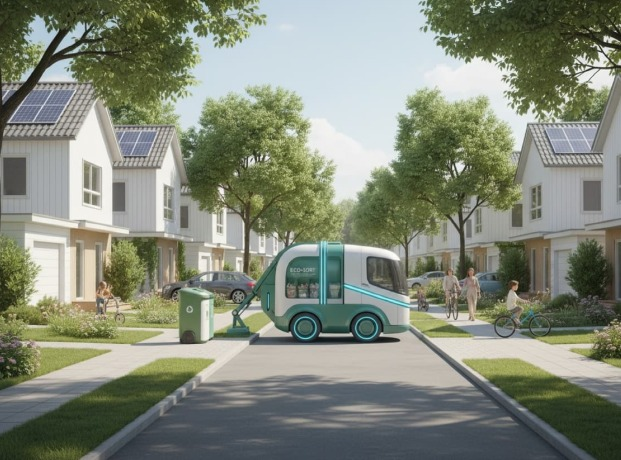

TrashFlow adalah solusi digital untuk manajemen pengangkutan sampah di lingkungan perumahan. Dengan sistem rute terjadwal dan fitur pelaporan, TrashFlow membantu menciptakan lingkungan yang lebih bersih, tertata, dan responsif.
